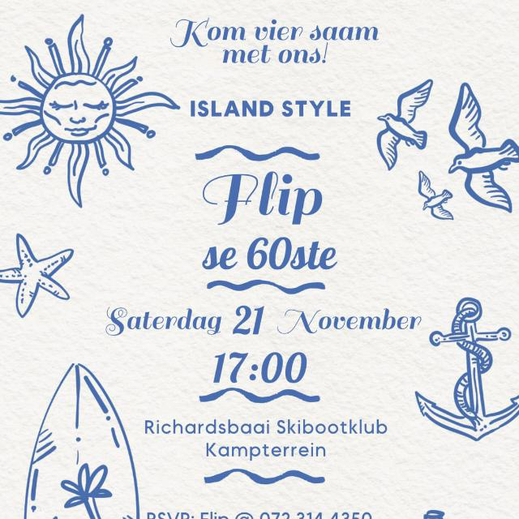

’n Stoute bliksem. ’n Vrye siel.
Flip se
60ste.
Talent is permanent.
En die lewe is ’n lied.
60 jaar van lag, liefde en vriendskap. Een man wat ’n pa, ’n broer, ’n neef en ’n vriend is — en altyd daar is. Kom vier ’n lewe vol stories saam met ons.
Saterdag 21 November 2026 17:00

Van jacarandas
tot vandag.
Somer ses-en-sestig. Jacarandas in blom. En daar kom Flip en Martie se middelste klong.
’n Stoute bliksem met ’n lag wat ’n vertrek sommer warmer maak. ’n Vrye siel, soos die wind hom waai. ’n Man wat geleer het om die lewe se curve balls te vang en te keer — en steeds die mooi raak te sien.
Om vir Flip te ken is die grootste plesier. ’n Pa, ’n broer, ’n man, ’n neef en ’n vriend. Liefde sonder einde. Dít is die mooiste mooi wat oorbly.

60 jaar se stories.
Die mense. Die oomblikke. Die mooiste herinneringe. Só onthou ons Flip.
Elke foto skuif die storie aan.
Die volgende foto skuif in.
Speel die foto’s en video’s op ’n groot skerm — die volgende foto kom altyd van regs.
Talent is
permanent.
“En die lewe is ’n lied. Om vir Flip te ken is die grootste plesier.”
’n Pa, ’n broer, ’n man
Neef en vriend wat altyd kan
Liefhê sonder einde
Jou hele lewe lank.
Die lewe gooi sy curve balls
Wat Flip sal kan getuig
’n Ou moet vang en keer
En deur dit alles leer.
’n Klein knipoog na Flip se oorspronklike verjaarsdaglied.
Drie dae. Een groot kuier.
Die Skibootklub sorg vir die etes en ons sorg vir die lekker geselskap. Hier is wat op die spyskaart is.

Goed om te weet.
Kampeer jy of kom kuier jy net vir die dag? Hier’s die reëlings sodat almal maklik kan inkom en lekker kan kuier.
Kom soos jy is. Ry maklik in.
Met eie vervoer en nie ’n Skibootklub-lid nie? Stuur die bestuurder se naam en van, asook die voertuig se maak en registrasienommer vir Flip om die voertuigpermit te reël.
Kom jy met ’n taxi? Die toegangspermit word vooraf gereël.
Stuur permitbesonderhede ↗Jou plek in die son.
Kampplekke is reeds geboek en word individueel aan elkeen deurgegee.
Indien jy nie ’n Skibootklub-lid is nie, stuur die bestuurder se naam en van en voertuig se maak en registrasienommer vir Flip vir jou voertuigpermit.
Stuur permitbesonderhede ↗Die oorspronklike kennisgewing bevat die volledige praktiese reëlings.
Maak die plakkaat oop ↗Om vir Flip te ken,
is die grootste plesier.
Veels geluk, ou neef. Kom vier saam ’n besonderse mens — ’n man wie se lewe ’n lied is.